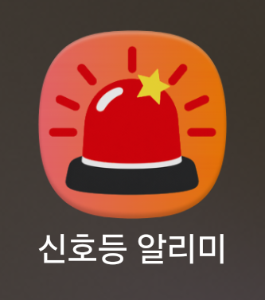

횡단보도 앞에서 경고
가상 비콘 범위에 들어오면 영상이나 메신저 위에 “횡단보도 앞입니다. 주변을 봐주세요.”가 떠요.
5난초가 생각한 강릉의 보행 안전
길을 살피는 작은 습관에 포인트가 쌓이고,
하슬랑도 함께 자라요.
“강릉의 보행자들이 어떻게 하면 더 안전하게 길을 다닐 수 있을까?”
5난초 학생들의 토의에서 시작한 경고 알림과 보상체계입니다.
강릉시 시민제안 제출용 시제품입니다. 정식 출시 앱이 아닙니다.
Android 8.0 이상에서 다른 앱 위에 뜨는 경고를 체험할 수 있어요.
학부모가 자녀의 휴대폰에 설치해 주면 좋겠다는
학생의 생각을 담았습니다.
오른쪽 화살표로 앞으로 걸어가 보세요.
휴대폰 오른쪽 전원 버튼으로 화면을 켜고 끌 수 있어요. 화면 아래 막대를 누르거나 위로 밀면 홈이 열려요.
평소 앱 둘러보기
걷기 체험을 시작하지 않아도 앱을 열어 볼 수 있어요. 아래 메뉴에서 내 포인트, 상점, 교통안전 칭호, 하슬랑을 살펴보세요.
횡단보도 체험에서 모은 포인트가 여기에 표시돼요.
횡단보도 체험 안내
가상 비콘 범위에 들어오면 영상이나 메신저 위에 “횡단보도 앞입니다. 주변을 봐주세요.”가 떠요.
경고를 닫지 않고 숫자가 끝날 때까지 기다리면 자동으로 적립돼요. 화면을 끈 채 기다려도 적립되며 하루 최대 3회예요.
“앗! 아쉬워요. 주변을 조심하세요.”가 떠요. 10초 전에 경고를 닫거나 범위를 벗어나면 이번 포인트는 지급되지 않아요.

5난초가 정한 이름과 로고
5난초 학생들이 앱 이름과 아이콘을 직접 만들고, 학급 투표를 통해 ‘신호등 알리미’라는 이름과 빨간 사이렌 디자인을 골랐어요.
노란 별과 주황색 배경을 담은 둥근 사각형 아이콘을 앱과 웹에서 사용해요.
신호등 알리미 실기기 화면
10초 유지 시 10점, 하루 최대 3회.
하슬랑은 누적 기록에 따라 성장해요.
거리 배경은 Gangneung Station 3, Christophe95 사진을 AI로 재구성했습니다. 원본과 재구성 장면에 CC BY-SA 4.0을 적용합니다.